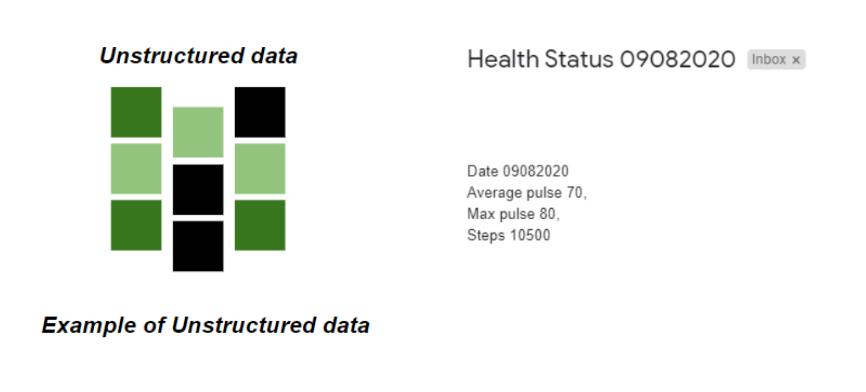
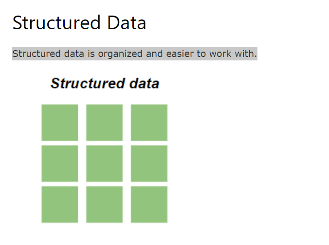
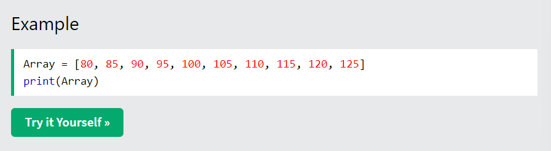

Data is a collection of information.
One purpose of Data Science is to structure data, making it interpretable and easy to work with.
Data can be categorized into two groups:
Unstructured data is not organized. We must organize the data for analysis purposes.
Structured data is organized and easier to work with.
We can use an array or a database table to structure or present data.
Example of an array:
[80, 85, 90, 95, 100, 105, 110, 115, 120, 125]
The following example shows how to create an array in Python:
It is common to work with very large data sets in Data Science.
In this tutorial we will try to make it as easy as possible to understand the concepts of Data Science. We will therefore work with a small data set that is easy to interpret.